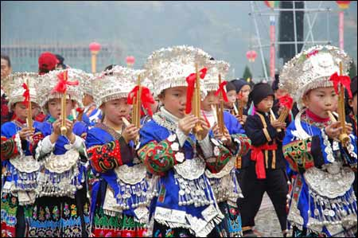

苗乡风情构成包括居住、习俗、崇拜、音乐歌舞、节庆民俗活动等诸多方面。其中包涵着可供发掘的旅游素材，尤其以苗乡歌舞音乐、民俗节庆活动有较高旅游价值。
川南苗族婚礼饶有情趣，送新娘不坐轿，吃和气饭，彻夜欢庆，新郎新娘多能歌善舞，整个仪式简朴。欢乐，充满苗乡欢庆气氛。
仙峰羊是当地苗族饲养的传统羊肉、个小肉嫩。兴文人有两种吃法，一市烤全羊、二是清炖黄羊。清炖与别处不一样，汤中加鲜鱼同羊肉一起炖，体现“鲜”的本味。采用佐料是仙峰山出产的萝卜，一年四季均有新鲜萝卜供应。
兴文苗族喝酒喜欢窖酒和常酒，都是用大米酿成的低度酒，常酒酸苦，窖酒甘甜，但酒精含量很低，多用小碗或大杯敬酒。同时，兴文人也爱喝烈性酒，仙峰老白干是兴文人最喜欢的酒，其酒精含量高达63度。与兴文苗族同胞喝酒，如敬酒的人唱完祝酒歌，无论酒有多少，客人都得一饮而下，这是兴文苗族的习俗。
踩山节是苗族同胞的传统节日，每年农历三月三日举行，有对歌、芦笙舞、踩山舞，每年踩山节，邻近地区的苗族同胞都要聚会在一起。
兴文人喜爱高桩戏，每年文昌会和重阳节都要举办高桩戏，主要演员表演时，离戏台3米高，景象十分壮观、神奇。
